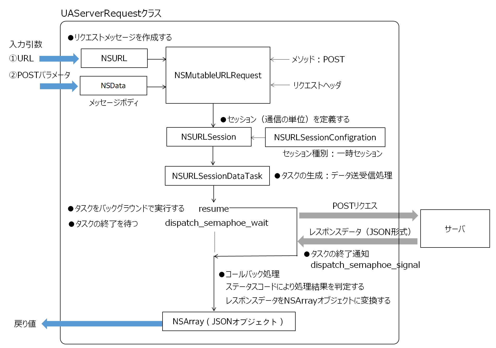

HTTP通信を行う定型処理をラップしたクラス
処理概要

NSMutableURLRequestクラスにより、POSTコマンドによるHTTPリクエストメッセージを作成する。NSURLSessionクラスによりメッセージの送受信をバックグラウンドで行う。dispatch_semaphoreにより、サーバからのレスポンスを受信するまで完了の同期をとる。サーバはレスポンスデータをJSONオブジェクトとして送るものとする。
クラスメソッドを提供する
POSTコマンド（１）
URL文字列（cmd）とPOSTパラメータ（param）を引数とする。POSTパラメータは x-www-form-urlencoded形式の文字列。戻り値はJSONオブジェクト。
POSTコマンド（２）
URL文字列（cmd）とPOSTパラメータ（param）を引数とする。POSTパラメータはKeyと値の組み合わせのDictionaryオブジェクト。戻り値はJSONオブジェクト。
内部メソッド
リクエストメッセージの作成
メッセージの送受信
dispatch_semaphoreにより同期処理を行う。メソッドはサーバからレスポンスを受信するまで待つ。dispatch_semaphore_waitで処理を待機し、dispatch_semaphore_signalの通知により再開する。
使用方法
血圧管理カレンダーアプリケーションで、1ヶ月分の血圧データを表示するために、期間を指定してサーバのDBから血圧データを読み込む処理で使用している。